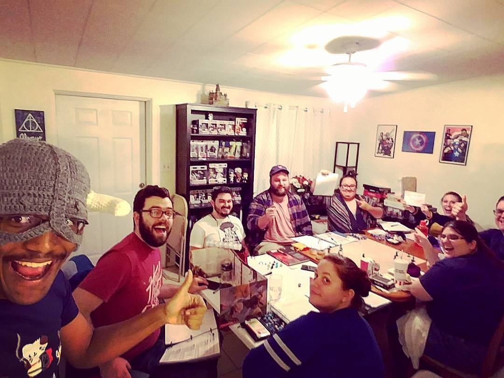

- 
Day One
March 13th, 2017
Leading up to becoming a student with the Iron Yard became a long journey for me. It took a better part of a year to fully make a decision as to whether on not I should learn how to code with this school. I finally came to the decision when I toured the school. It was then when I knew that this was the school that I was meant to attend. One the first day of class, I was super nervous over the fact that I didn't know a single thing about coding. When the professor told everyone not to worry about whether or not about what we knew about coding. Getting to know the other classmate was as well a great factor into knowing that I made the best descision of my life.